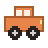

Welcome to Clawake
Finish setup to start keeping your Mac awake.
1
Allow lid-closed keep-awake
Keeping your Mac awake with the lid closed requires a one-time macOS administrator approval. Clawake adds a small, scoped rule for this and never asks again.
2
Connect Claude Code optional
Add Clawake's hooks to Claude Code so the “Follow Claude sessions” mode knows when Claude is working. One click, no restart. Skip it if you just want “Always awake”.